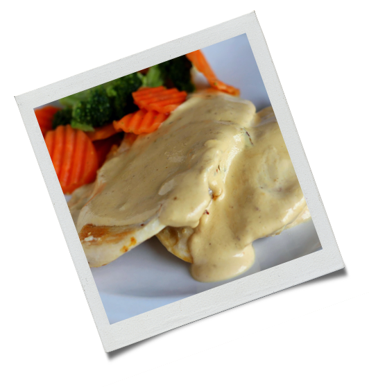

4 filés de frango

2 dentes de alho
1 colher (sopa) de vinagre branco
Pimenta do reino
Sal a gosto
Fio de azeite
1/2 cebola ralada ou triturada
1 colher (chá) de manteiga
70ml de vinho branco
2 colheres (sopa) de mostarda dijon ou amarela
200ml de creme de leite fresco
Sal e pimenta do reino a gosto
Tempere os filés de frango com os temperos acima;
Deixe marinar por aproximadamente 1 hora na geladeira, se possível;
Em uma frigideira quente com um fio de azeite sele os filés dos dois lados;
Sirva a seguir com o molho de mostarda.
Em uma panela coloque a manteiga e deixe a cebola murchar;
Acrescente o vinho branco e deixe evaporar;
Em seguida adicione todos os demais ingredientes, misture bem e deixe apurar até chegar em uma consistência suave e cremosa.